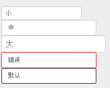

INPUT(文本控件)
默认效果自带圆角，阴影，内部渐变
IE9 以上浏览器支持圆角
【示例代码】：
<input type="text" class="small"> <br>
<input type="text"> <br>
<input type="text" class="big"> <br>
<input type="text" class="error"> <br>
<input type="text" class="default">
【浏览器打开效果】：
